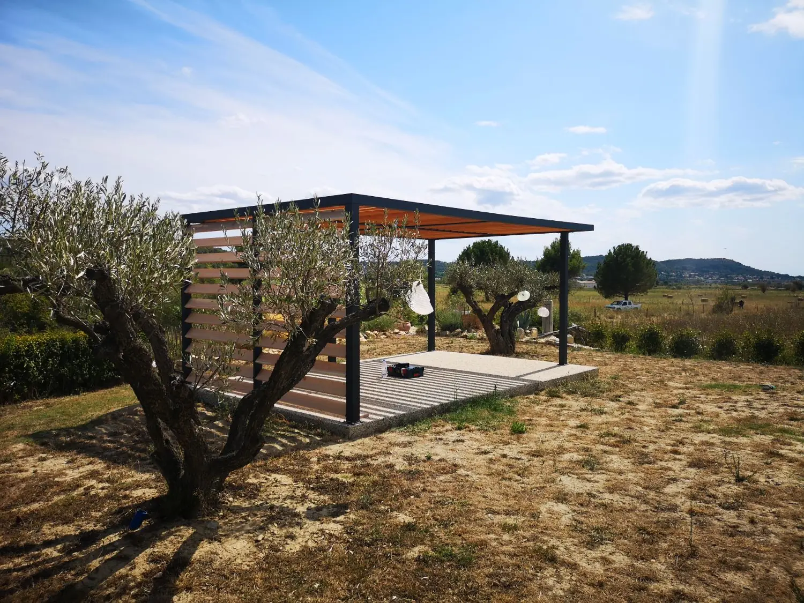
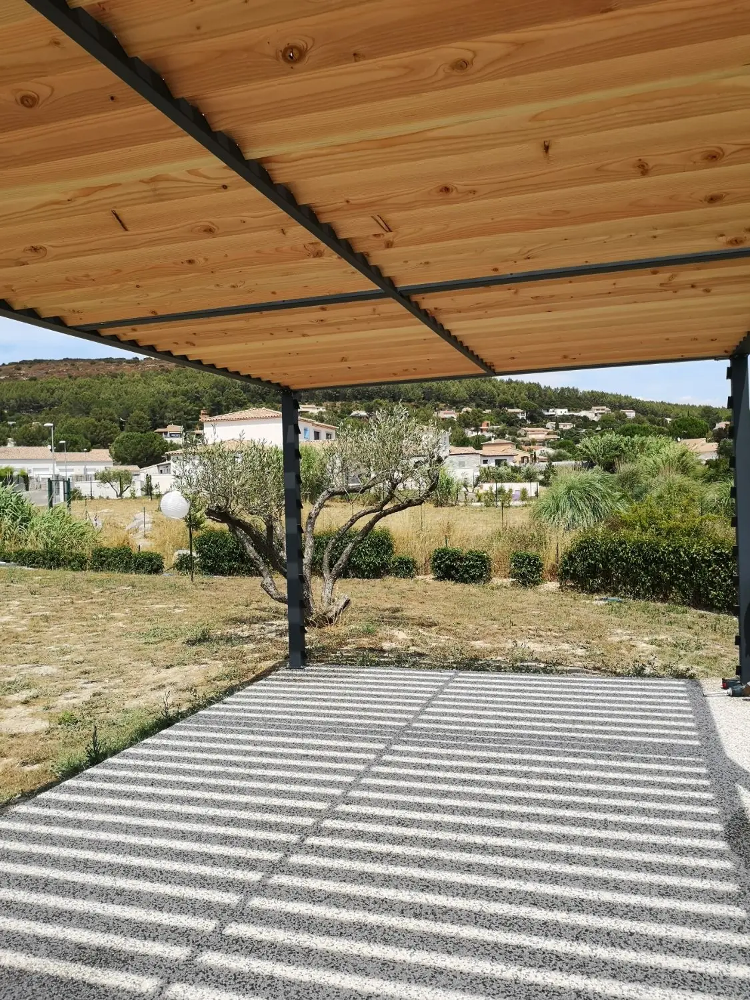
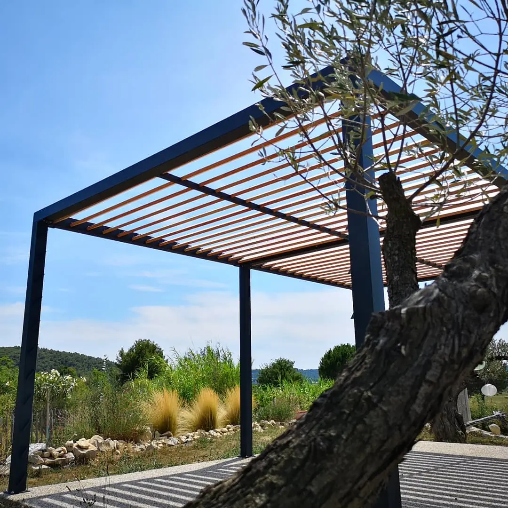
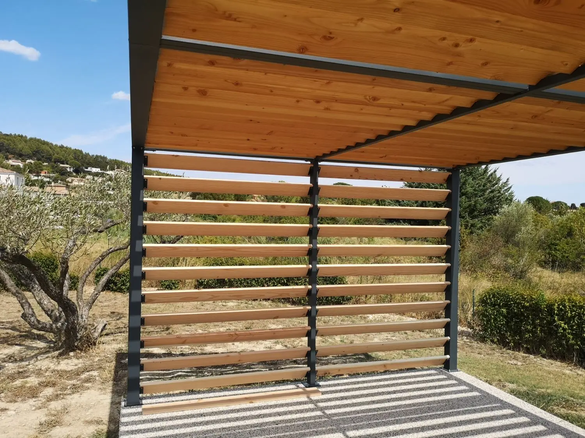

À Caveirac, à quelques kilomètres de Nîmes, les propriétaires souhaitaient créer un coin d'ombre au fond de leur jardin, sur une dalle de 6 × 3 m aménagée entre les oliviers, avec la vue sur la campagne gardoise et les collines. Pas de mur pour s'appuyer : la pergola devait tenir seule. Et pas question d'encombrer la terrasse ou de couper le paysage avec des poteaux. FMG Metal Studio a conçu pour eux une pergola autoportante sur mesure, dessinée aux dimensions exactes de la dalle et de l'usage.
Une pergola autoportante dessinée sur mesure
Une pergola en kit impose ses dimensions, ses sections et ses entraxes de poteaux ; c'est au projet de s'y adapter. Ici, c'est l'inverse : l'emprise de 6 × 3 m épouse la dalle, et les sections, les assemblages comme l'habillage bois ont été définis pour ce projet.
- Autoportante : la structure ne s'appuie sur aucun bâtiment. Ancrée sur sa dalle, elle assure seule sa stabilité.
- Dimensions sur mesure : 6 m de long sur 3 m de large, calées sur la terrasse.
- Une ligne fine : des poteaux et des poutres de section réduite, une rive de toiture continue et nette, sans rien d'apparent qui alourdisse la silhouette.

6 mètres de portée, sans poteau intermédiaire
C'est le point fort du projet : la pergola ne repose que sur quatre poteaux, placés aux angles. Sur toute sa longueur, 6 mètres sont franchis d'un seul tenant, sans le moindre poteau intermédiaire. La terrasse reste entièrement libre pour circuler et installer table ou salon, et depuis l'intérieur, la vue sur les oliviers et les collines n'est jamais interrompue.
Une telle portée ne s'improvise pas. Elle demande de dimensionner précisément les poutres, les assemblages d'angle et les ancrages au sol pour que la structure reste rigide, sans fléchir sous le poids de la couverture ni bouger sous le vent, alors qu'aucun mur ne vient la contreventer. C'est tout l'intérêt d'une pergola conçue et fabriquée dans notre atelier : la structure est calculée pour ce projet précis, et non choisie dans un catalogue.


Un habillage en bois Douglas traité
La toiture est formée de lames de bois de type Douglas traité, posées inclinées sur des supports métalliques crantés qui fixent leur pente et leur espacement. Elles arrêtent le soleil le plus haut de la journée tout en laissant passer l'air et une lumière douce : au sol, la pergola dessine un jeu d'ombres rayées qui se déplace au fil des heures.
Sur l'un des petits côtés, un claustra brise-vue reprend les mêmes lames de Douglas, posées à l'horizontale. Il protège la terrasse du vent et des regards sans fermer l'espace. Le Douglas, essence résineuse appréciée en extérieur, a été traité pour résister aux intempéries ; son ton chaud répond au gris anthracite de la structure et à l'argenté des oliviers.

Une finition thermolaquée RAL 7016
Toute la structure métallique a été thermolaquée en RAL 7016, un gris anthracite qui souligne le dessin de la pergola et se fond dans le paysage. Le thermolaquage offre une finition homogène et durable, adaptée à un ouvrage exposé en plein soleil, aux pluies d'automne et au mistral du Gard.
- Ouvrage
- Pergola autoportante sur mesure
- Dimensions
- 6 × 3 m
- Structure
- 4 poteaux d'angle, 6 m de portée sans poteau intermédiaire
- Couverture
- Lames bois type Douglas traité, inclinées
- Claustra
- Lames bois type Douglas traité, sur un petit côté
- Finition
- Thermolaquage RAL 7016
- Projet
- Jardin, maison particulière
- Lieu
- Caveirac, Gard (30)
Votre pergola sur mesure à Nîmes et dans le Gard
Autoportante au milieu d'un jardin, ou au contraire portée entre deux murs, comme pour ce pool house également à Caveirac : chaque pergola que nous réalisons est dessinée pour son lieu, ses contraintes et ses usages, puis fabriquée dans notre atelier nîmois. Dimensions, portées, couverture en bois, claustras, teinte : tout se décide avec vous, autour de Nîmes, dans le Gard et dans tout le sud de la France.
Vous avez un projet de pergola ? Découvrez nos réalisations ou parlons de votre projet.